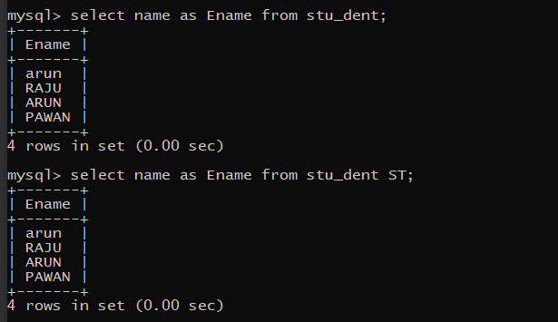

SQL ALIAS
SQL Aliases defined for columns and tables. Basically aliases are created to make the column(s) or tables(s) selected more readable.
Aliases for columns:-
Syntax:-
SELECT COL_NAME AS ALTERNATE_NAME FROM TABLE_NAME
Aliases for Tables:-
SELECT COL_NAME FROM TABLE_NAME alter_table_name
Example:-

Aliases are more useful when:-
1.There are more than one tables involved in a query.
2. Functions are used in the query.
3. The column names are big or not readable.
4. More than one column is combined together.